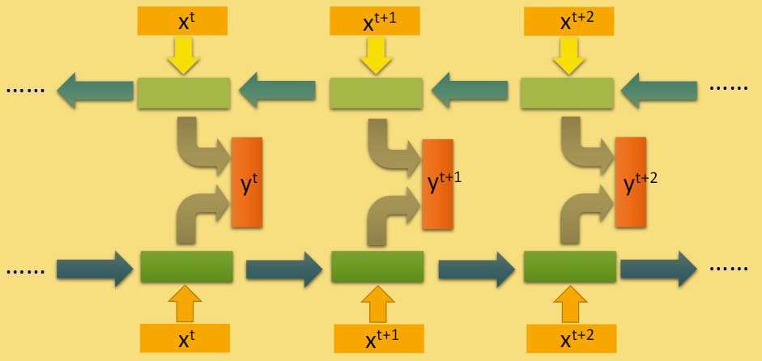

TextRNN
使用双向LSTM。使用最后的hidden layer全连接进行分类。
1 | import numpy as np |
1 | train_file_path = "THUCNews/data/train.txt" |
1 | # 加载与训练好的embedding 数组 |
1 | # 生成一个 字 与 id 的map 相互一一映射(tokenizer 切割方式) |
{“如”： 213} -> 213 embedding [1.24, 2.1, 3.5, 2.52,…… 12.3, 0.234]
{““：4762} -> 4762 embedding [3.04, 3.3, 1.5, 0.52,…… 2.13, 0.341]
1 | # 生成与源文本与之对应的 id 数值 |
1 | # 产生train dev 和 test 数据集合（由id组成，并与文字一一对应） |
（[“我”, “爱”, “中”, “国”，”,”…….. “美”， “好”，“
”，“ ”]， 类型，总的长度）
（[132, 3, 32, 44, 24,……, 32, 213, 4403, 4403 ] ， 3， 30）

1 | class Model(nn.Module): |
1 | def build_iterator(dataset, batch_size): |
1 | # 权重初始化， 使用xavier |
1 | def train(model, train_iter, dev_iter, test_iter): |
1 | def test(model, test_iter): |
1 | def evaluate(model, data_iter, test = False): |
1 | def run(): |
1 | run() |
Loading data...
180000it [00:02, 65875.25it/s]
10000it [00:00, 70955.32it/s]
10000it [00:00, 69962.09it/s]
+++++++++++++++++++++++++++++++++
<__main__.DatasetIterater object at 0x000002854FC59D30>
<__main__.DatasetIterater object at 0x000002854FC59D30>
<__main__.DatasetIterater object at 0x000002854FC59D30>
Loading data Complete, Using time 3.046241283416748
C:\ProgramData\Anaconda3\lib\site-packages\torch\nn\modules\rnn.py:54: UserWarning: dropout option adds dropout after all but last recurrent layer, so non-zero dropout expects num_layers greater than 1, but got dropout=0.5 and num_layers=1
"num_layers={}".format(dropout, num_layers))
<bound method Module.parameters of Model(
(embedding): Embedding(4762, 300)
(lstm): LSTM(300, 32, batch_first=True, dropout=0.5, bidirectional=True)
(fc): Linear(in_features=64, out_features=10, bias=True)
)>
Epoch [1/20]
Iter: 0, Train Loss: 2.3, Train Acc: 5.47%, Val Loss: 2.3, Val Acc: 9.99%, Time: 3.8678135871887207 *
Iter: 100, Train Loss: 1.9, Train Acc: 28.91%, Val Loss: 1.9, Val Acc: 31.62%, Time: 22.469587802886963 *
Iter: 200, Train Loss: 1.4, Train Acc: 51.56%, Val Loss: 1.2, Val Acc: 55.65%, Time: 40.84703755378723 *
Iter: 300, Train Loss: 0.95, Train Acc: 72.66%, Val Loss: 1.1, Val Acc: 65.07%, Time: 60.29182720184326 *
Iter: 400, Train Loss: 0.78, Train Acc: 75.78%, Val Loss: 0.81, Val Acc: 74.96%, Time: 78.93504977226257 *
Iter: 500, Train Loss: 0.63, Train Acc: 82.81%, Val Loss: 0.72, Val Acc: 77.39%, Time: 98.05553436279297 *
Iter: 600, Train Loss: 0.69, Train Acc: 79.69%, Val Loss: 0.67, Val Acc: 79.05%, Time: 117.16351222991943 *
Iter: 700, Train Loss: 0.63, Train Acc: 82.03%, Val Loss: 0.61, Val Acc: 81.13%, Time: 135.9926619529724 *
Iter: 800, Train Loss: 0.5, Train Acc: 83.59%, Val Loss: 0.57, Val Acc: 82.46%, Time: 155.52704286575317 *
Iter: 900, Train Loss: 0.52, Train Acc: 83.59%, Val Loss: 0.55, Val Acc: 82.95%, Time: 174.2003309726715 *
Iter: 1000, Train Loss: 0.44, Train Acc: 86.72%, Val Loss: 0.54, Val Acc: 83.21%, Time: 192.82258319854736 *
Iter: 1100, Train Loss: 0.4, Train Acc: 89.84%, Val Loss: 0.49, Val Acc: 84.65%, Time: 211.5442943572998 *
Iter: 1200, Train Loss: 0.36, Train Acc: 89.06%, Val Loss: 0.48, Val Acc: 85.20%, Time: 230.28150415420532 *
Iter: 1300, Train Loss: 0.48, Train Acc: 83.59%, Val Loss: 0.48, Val Acc: 85.06%, Time: 249.9981701374054 *
Iter: 1400, Train Loss: 0.55, Train Acc: 84.38%, Val Loss: 0.46, Val Acc: 85.76%, Time: 268.71038818359375 *
Epoch [2/20]
Iter: 1500, Train Loss: 0.48, Train Acc: 85.16%, Val Loss: 0.45, Val Acc: 85.83%, Time: 287.3316514492035 *
Iter: 1600, Train Loss: 0.45, Train Acc: 85.16%, Val Loss: 0.46, Val Acc: 85.38%, Time: 306.0338559150696
Iter: 1700, Train Loss: 0.42, Train Acc: 84.38%, Val Loss: 0.43, Val Acc: 86.62%, Time: 324.7470557689667 *
Iter: 1800, Train Loss: 0.34, Train Acc: 90.62%, Val Loss: 0.44, Val Acc: 86.25%, Time: 343.53873229026794
Iter: 1900, Train Loss: 0.36, Train Acc: 88.28%, Val Loss: 0.41, Val Acc: 86.96%, Time: 362.429979801178 *
Iter: 2000, Train Loss: 0.41, Train Acc: 87.50%, Val Loss: 0.41, Val Acc: 86.97%, Time: 381.4939856529236 *
Iter: 2100, Train Loss: 0.45, Train Acc: 87.50%, Val Loss: 0.4, Val Acc: 87.39%, Time: 400.5055284500122 *
Iter: 2200, Train Loss: 0.28, Train Acc: 91.41%, Val Loss: 0.41, Val Acc: 87.08%, Time: 419.2572121620178
Iter: 2300, Train Loss: 0.32, Train Acc: 90.62%, Val Loss: 0.4, Val Acc: 87.43%, Time: 438.2492642402649 *
Iter: 2400, Train Loss: 0.31, Train Acc: 91.41%, Val Loss: 0.4, Val Acc: 87.65%, Time: 456.98245310783386 *
Iter: 2500, Train Loss: 0.28, Train Acc: 90.62%, Val Loss: 0.4, Val Acc: 86.99%, Time: 476.24933409690857
Iter: 2600, Train Loss: 0.36, Train Acc: 88.28%, Val Loss: 0.39, Val Acc: 87.81%, Time: 495.0570206642151 *
Iter: 2700, Train Loss: 0.27, Train Acc: 93.75%, Val Loss: 0.39, Val Acc: 87.61%, Time: 513.9666152000427 *
Iter: 2800, Train Loss: 0.44, Train Acc: 85.94%, Val Loss: 0.38, Val Acc: 87.87%, Time: 532.8607122898102 *
Epoch [3/20]
Iter: 2900, Train Loss: 0.4, Train Acc: 89.06%, Val Loss: 0.38, Val Acc: 87.80%, Time: 551.6988520622253
Iter: 3000, Train Loss: 0.29, Train Acc: 89.06%, Val Loss: 0.38, Val Acc: 88.30%, Time: 570.5799615383148 *
Iter: 3100, Train Loss: 0.28, Train Acc: 89.84%, Val Loss: 0.39, Val Acc: 87.66%, Time: 589.4430770874023
Iter: 3200, Train Loss: 0.35, Train Acc: 90.62%, Val Loss: 0.38, Val Acc: 87.63%, Time: 608.1702740192413
Iter: 3300, Train Loss: 0.37, Train Acc: 85.94%, Val Loss: 0.38, Val Acc: 87.97%, Time: 627.0054371356964
Iter: 3400, Train Loss: 0.3, Train Acc: 89.84%, Val Loss: 0.38, Val Acc: 88.29%, Time: 645.7606160640717
Iter: 3500, Train Loss: 0.29, Train Acc: 91.41%, Val Loss: 0.37, Val Acc: 88.25%, Time: 665.3868064880371 *
Iter: 3600, Train Loss: 0.2, Train Acc: 93.75%, Val Loss: 0.37, Val Acc: 88.15%, Time: 684.3798725605011
Iter: 3700, Train Loss: 0.37, Train Acc: 84.38%, Val Loss: 0.36, Val Acc: 88.40%, Time: 703.2969629764557 *
Iter: 3800, Train Loss: 0.32, Train Acc: 89.06%, Val Loss: 0.36, Val Acc: 88.65%, Time: 722.1076171398163
Iter: 3900, Train Loss: 0.33, Train Acc: 88.28%, Val Loss: 0.36, Val Acc: 88.56%, Time: 741.0077271461487
Iter: 4000, Train Loss: 0.24, Train Acc: 91.41%, Val Loss: 0.37, Val Acc: 88.10%, Time: 759.8083894252777
Iter: 4100, Train Loss: 0.34, Train Acc: 89.06%, Val Loss: 0.37, Val Acc: 88.56%, Time: 778.7774691581726
Iter: 4200, Train Loss: 0.34, Train Acc: 92.19%, Val Loss: 0.35, Val Acc: 88.69%, Time: 797.5661556720734 *
Epoch [4/20]
Iter: 4300, Train Loss: 0.26, Train Acc: 92.19%, Val Loss: 0.36, Val Acc: 88.57%, Time: 816.4322924613953
Iter: 4400, Train Loss: 0.15, Train Acc: 93.75%, Val Loss: 0.36, Val Acc: 88.61%, Time: 835.2734205722809
Iter: 4500, Train Loss: 0.31, Train Acc: 89.84%, Val Loss: 0.35, Val Acc: 88.54%, Time: 854.1645164489746 *
Iter: 4600, Train Loss: 0.22, Train Acc: 92.19%, Val Loss: 0.36, Val Acc: 88.29%, Time: 873.123607635498
Iter: 4700, Train Loss: 0.37, Train Acc: 89.06%, Val Loss: 0.36, Val Acc: 88.73%, Time: 892.0637054443359
Iter: 4800, Train Loss: 0.18, Train Acc: 92.19%, Val Loss: 0.36, Val Acc: 88.60%, Time: 911.1337130069733
Iter: 4900, Train Loss: 0.22, Train Acc: 92.97%, Val Loss: 0.36, Val Acc: 88.87%, Time: 930.1882197856903
Iter: 5000, Train Loss: 0.34, Train Acc: 87.50%, Val Loss: 0.36, Val Acc: 88.76%, Time: 949.0653252601624
Iter: 5100, Train Loss: 0.28, Train Acc: 88.28%, Val Loss: 0.35, Val Acc: 88.85%, Time: 968.1674032211304 *
Iter: 5200, Train Loss: 0.33, Train Acc: 86.72%, Val Loss: 0.35, Val Acc: 88.98%, Time: 987.1639504432678
Iter: 5300, Train Loss: 0.2, Train Acc: 91.41%, Val Loss: 0.35, Val Acc: 88.65%, Time: 1005.9341161251068
Iter: 5400, Train Loss: 0.34, Train Acc: 89.84%, Val Loss: 0.35, Val Acc: 89.01%, Time: 1024.9731514453888
Iter: 5500, Train Loss: 0.22, Train Acc: 92.19%, Val Loss: 0.35, Val Acc: 88.74%, Time: 1045.3965137004852
Iter: 5600, Train Loss: 0.16, Train Acc: 96.88%, Val Loss: 0.35, Val Acc: 88.91%, Time: 1065.713327884674
Epoch [5/20]
Iter: 5700, Train Loss: 0.29, Train Acc: 90.62%, Val Loss: 0.35, Val Acc: 88.90%, Time: 1085.443971157074
Iter: 5800, Train Loss: 0.17, Train Acc: 95.31%, Val Loss: 0.35, Val Acc: 88.97%, Time: 1104.4659898281097
Iter: 5900, Train Loss: 0.24, Train Acc: 90.62%, Val Loss: 0.36, Val Acc: 88.75%, Time: 1124.85223031044
Iter: 6000, Train Loss: 0.28, Train Acc: 90.62%, Val Loss: 0.36, Val Acc: 88.90%, Time: 1146.5233688354492
Iter: 6100, Train Loss: 0.31, Train Acc: 89.06%, Val Loss: 0.36, Val Acc: 88.79%, Time: 1166.4595756530762
No improve, auto-stoppping
Test Loss: 0.35, Test Acc: 89.18%
Precision, Recall and F1-Score...
precision recall f1-score support
finance 0.9049 0.8470 0.8750 1000
realty 0.8627 0.9360 0.8978 1000
stocks 0.8492 0.7770 0.8115 1000
education 0.9258 0.9360 0.9309 1000
science 0.8071 0.8620 0.8337 1000
society 0.9007 0.8890 0.8948 1000
politics 0.8752 0.8770 0.8761 1000
sports 0.9706 0.9560 0.9632 1000
game 0.9197 0.9160 0.9178 1000
entertainment 0.9084 0.9220 0.9151 1000
micro avg 0.8918 0.8918 0.8918 10000
macro avg 0.8924 0.8918 0.8916 10000
weighted avg 0.8924 0.8918 0.8916 10000
Confusion Matrix...
[[847 36 67 5 21 8 12 1 2 1]
[ 9 936 12 2 8 9 6 3 4 11]
[ 58 44 777 1 58 1 44 1 13 3]
[ 0 5 3 936 14 16 13 0 4 9]
[ 4 13 25 8 862 16 16 3 38 15]
[ 5 22 1 24 16 889 24 2 4 13]
[ 6 12 19 18 22 29 877 2 4 11]
[ 1 3 3 2 3 5 5 956 1 21]
[ 2 2 6 2 52 7 2 2 916 9]
[ 4 12 2 13 12 7 3 15 10 922]]
Time usage: 3.51796293258667